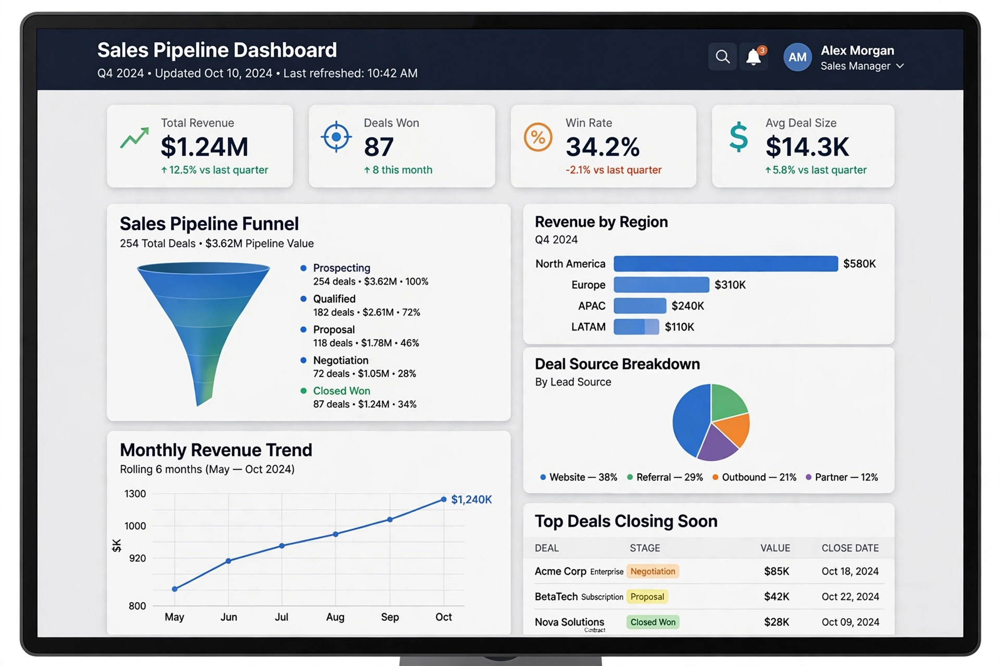

Customer relationship management (CRM) is a strategic process and supporting technology that companies use to manage and analyse customer interactions and data throughout the customer lifecycle. The goal is to improve customer service relationships, assist in customer retention and drive sales growth. CRM systems compile data from websites, telephone, email, live chat, marketing materials and social media into a single customer database.
CRM is commonly divided into operational CRM (automating sales, marketing and service processes), analytical CRM (analysing customer data for targeting and forecasting) and collaborative CRM (sharing customer information across departments and partners). Sales force automation — contact management, opportunity tracking and pipeline forecasting — is the classic core.
The concept grew out of 1980s database marketing and contact-management software such as ACT! and GoldMine, and the sales-force-automation products of the 1990s from vendors like Siebel Systems. The market was transformed by software as a service: Salesforce, founded in 1999, delivered CRM over the web by subscription and became the market leader, followed by Microsoft Dynamics 365, Oracle, SAP and HubSpot. From the 2010s, CRM platforms expanded into marketing automation, e-commerce, customer service and embedded AI assistants.
CRM projects have historically had high failure rates, usually attributed to poor data quality, lack of user adoption among sales staff and treating CRM as a technology purchase rather than a business strategy.